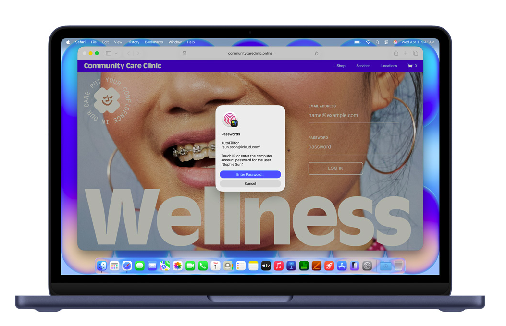

Finder에서 썸네일로 찾기
꽁꽁 숨겨진 .hwp 파일이 알한글 설치 후 첫 페이지 썸네일과 함께 드러납니다.

Quick Look과 Finder, 앱 뷰어가 하나의 Mac 흐름으로 이어집니다.
Finder와 Quick Look, 앱 뷰어까지 HWP/HWPX 문서를
Mac 안에서 자연스럽게 열고 확인합니다.
꽁꽁 숨겨진 .hwp 파일이 알한글 설치 후 첫 페이지 썸네일과 함께 드러납니다.
Quick Look 확장으로 HWP/HWPX 문서를 열기 전에 빠르게 확인합니다.
WKWebView 기반 viewer로 문서를 열고, 필요한 내용을 바로 탐색합니다.
파일을 외부 서비스에 올리지 않고 Mac에서 처리하는 흐름을 우선합니다.


설치와 지원 범위, 개인정보 처리에 대해 자주 묻는 내용을 정리했습니다.
알한글은 MIT License로 공개되는 오픈소스 프로젝트입니다.
v0.1 MVP는 HWP/HWPX 문서의 Finder 미리보기, 썸네일, 앱 열기 흐름을 중심으로 합니다.
현재 버튼은 GitHub Releases 최신 페이지로 연결됩니다. 실제 배포 산출물 구성은 별도 작업 범위입니다.
알한글은 문서를 외부 서비스에 업로드하지 않고 로컬 처리를 우선합니다.
안전한 작은 수정은 v1.0 로드맵 범위입니다. 현재 랜딩페이지는 MVP viewer 흐름을 중심으로 소개합니다.
서명과 공증을 포함한 안정 배포는 별도 배포 작업 범위입니다. 현재는 GitHub Releases 안내를 우선 확인합니다.
v0.1 이후 검색, 내보내기, 변환, 자동화, native viewer 개선을 로드맵으로 추적합니다.